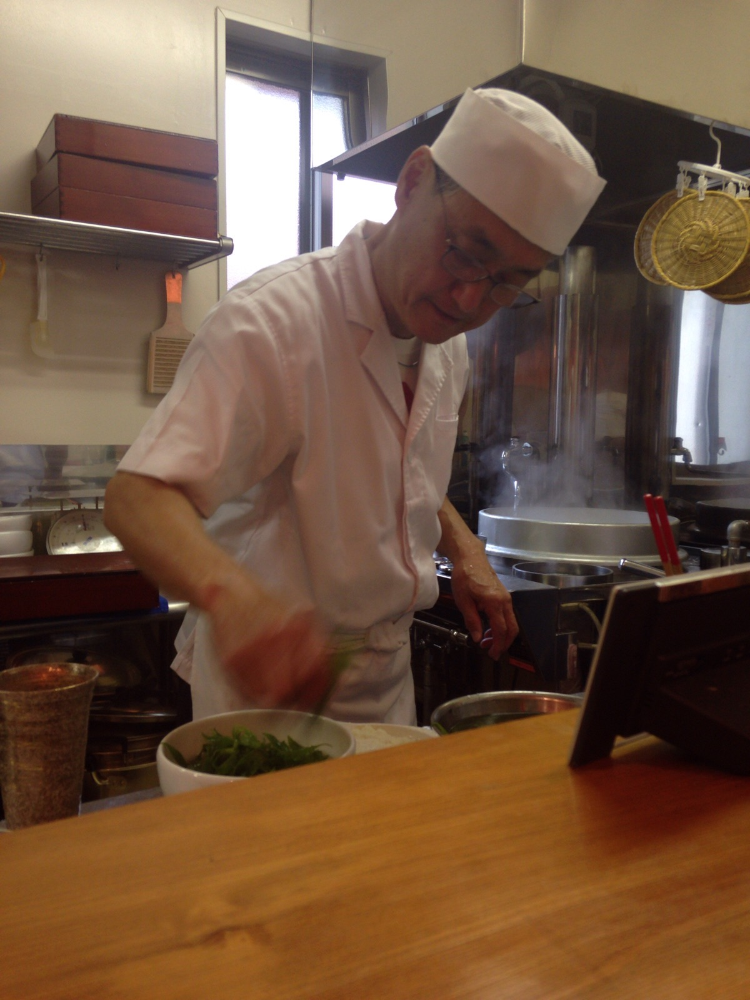

2016.07.02
蕎麦打ちを始めて何年になるだろうか。
一緒に蕎麦打ちをしていた友達が、
蕎麦屋を始めてしまったのです。
当分の間は、土曜日のみの営業とのこと。
香珈より少しましな感じ。
蕎麦も奥が深い。
素人目に見ると、切りが難しいく感じる。
綺麗に切れないからだ。
しかし、段々切りが上手くなると
のしがダメだと分かってくる。
それでも、素人の目じゃないかなと感じる。
偉そうなことを言っているが、
私の蕎麦はそんなに上手じゃありません。
野球はできなくても
監督になったつもりでカープの試合を見ている
ようなもの。
蕎麦も、人の蕎麦打ちを見て
あーだ、こーだと言っているだけ。
なのです。
話は戻るが、蕎麦はこねが大事だとたどり着く。
でも、その先が有ることを今は感じている。
原材料や産地もそうだけど、
私は、挽きに着目している。
如何に、のどごしや一口目の口当たりなど
挽き方で変わってくる。
もちろん、のしや切りにも影響する。
だから、おもしろい。
広島は10年前頃から本当に蕎麦屋が増えた。
これからも蕎麦も食べ歩きます。
友達のお店はここです。
http://hiroshimap.com/
